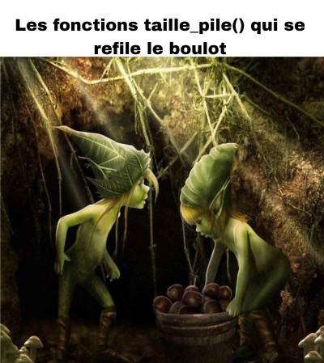

Listes et récursivité, en Gleam
Ce ne sont pas les listes Python
Ici, on ne parle pas des listes Python (qui sont en réalité des tableaux dynamiques). On étudie la vraie structure de liste, définie récursivement. Et on le fait dans un petit langage fonctionnel : Gleam.
Les listes sont l'outil idéal pour faire ses premiers pas en récursivité, et l'occasion de découvrir le paradigme fonctionnel.
Pourquoi Gleam
- Gleam n'a aucune boucle : ni
for, niwhile. La seule façon de parcourir une structure, c'est la récursivité. C'est exactement ce qu'on vient apprendre. -
Sa signature de fonction ressemble à votre Python typé :
Python Gleam def taille(lst) -> int:fn taille(lst: Liste(a)) -> Int { -
Le compilateur est un allié : messages d'erreur clairs, et il vous empêche d'oublier un cas.
Mise en place
Créez un projet : gleam new listes, puis travaillez dans src/listes.gleam. Pour exécuter votre code : gleam run. Pour afficher une valeur et l'observer, utilisez io.debug(...) (après un import gleam/io en haut du fichier).
La structure : deux possibilités
Imaginez un lutin à qui on tend une liste. Il n'a que deux possibilités devant lui :
- soit la liste est vide ;
- soit c'est un élément, la tête, suivi d'une autre liste, la queue.
Définition récursive d'une liste
Une liste est :
- soit vide ;
- soit une tête (un élément) suivie d'une queue (qui est elle-même une liste).
On définit la liste avec sa propre définition : c'est une structure récursive. En Gleam, ce type s'écrit :
adésigne un type quelconque (comme leTde Python) : une liste d'entiers, de chaînes, peu importe.- Il y a deux constructeurs,
VideetCons: une liste est l'un ou l'autre. Ce sont les deux possibilités du lutin. - La définition est récursive :
Conscontient uneListe(a)(la queue).
Construire une liste
La liste dont la tête est 2, suivie de 3, puis 4, puis la fin :
gleam run affiche Cons(2, Cons(3, Cons(4, Vide))).
Construire
Écris, dans main, la liste des trois chaînes "rouge", "vert", "bleu", puis affiche-la.
Lire une liste : la disjonction de cas
Pour faire quelque chose d'une liste, le lutin regarde laquelle des deux possibilités il a en main. C'est la disjonction de cas, écrite avec case :
- un cas par constructeur : le cas
Vide, et le casCons; Cons(tete, queue)déconstruit la liste : ça donne un nom à la tête (tete) et à la queue (queue).
Piège, et garde-fou : les deux cas, toujours
Gleam refuse de compiler si vous oubliez un cas. Impossible d'oublier le Vide. Le compilateur vous force à penser « cas de base / cas récursif », les deux fondations de toute récursivité.
Première fonction : la taille
On la lit ensemble avant d'en écrire soi-même.
Le raisonnement du lutin : « Je ne sais pas compter toute la liste d'un coup. Mais je sais deux choses : une liste vide a pour taille 0 ; sinon, c'est 1 (pour ma tête) plus ce que comptera un autre lutin sur la queue. »
_remplacetete: ici on ignore la valeur de la tête (on n'en a pas besoin pour compter).
Traçons taille(Cons(2, Cons(3, Cons(4, Vide)))) :
taille(Cons(2, ...)) = 1 + taille(Cons(3, ...))
= 1 + 1 + taille(Cons(4, Vide))
= 1 + 1 + 1 + taille(Vide)
= 1 + 1 + 1 + 0
= 3
Prédire
Sans exécuter : que renvoie taille(Cons(7, Cons(8, Vide))) ?
Réponse
2. Deux têtes avant d'atteindre Vide.
À toi d'écrire
Méthode
Avant de coder, écris la disjonction de cas au papier : que renvoie la fonction si la liste est Vide ? et si c'est Cons(tete, queue) ?
La somme
Écris somme(lst: Liste(Int)) -> Int qui renvoie la somme des éléments d'une liste d'entiers.
Contient
Écris contient(x: a, lst: Liste(a)) -> Bool qui indique si x est présent dans la liste.
Deux listes à la fois : les quatre cas
Comparons deux listes. Le lutin en tient maintenant deux en même temps : chacune peut être Vide ou Cons, ce qui fait quatre possibilités (2 × 2). On les écrit toutes les quatre.
pub fn sont_egales(l1: Liste(a), l2: Liste(a)) -> Bool {
case l1, l2 {
Vide, Vide -> True
Vide, Cons(_, _) -> False
Cons(_, _), Vide -> False
Cons(t1, q1), Cons(t2, q2) -> t1 == t2 && sont_egales(q1, q2)
}
}
- deux listes vides : égales ;
- une vide, l'autre non : différentes (pas la même longueur) ;
- deux non vides : même tête et mêmes queues (on redemande à un autre lutin).
Quatre cas, même si on pourrait en écrire moins
On pourrait fusionner les deux cas « une seule est vide » en un seul. Ce n'est qu'une optimisation d'écriture, et ce n'est pas le sujet : on écrit les quatre cas pour voir toute la disjonction. Là encore, Gleam exige que les quatre soient traités.
Les fonctions qui construisent
Les listes sont immuables
On ne modifie jamais une liste. Une opération qui semble « modifier » une liste en construit une nouvelle. Le lutin ne rature rien : il reconstruit en retour.
Exemple à lire, ajouter un élément à la fin :
pub fn ajouter_fin(x: a, lst: Liste(a)) -> Liste(a) {
case lst {
Vide -> Cons(x, Vide)
Cons(tete, queue) -> Cons(tete, ajouter_fin(x, queue))
}
}
Le lutin ajouteur : « Si on me tend une liste vide, je renvoie une liste qui ne contient que x. Sinon, je garde la même tête, et pour la queue je demande à un autre lutin d'y ajouter x, puis je recolle. »

Renverser
Écris renverser(lst: Liste(a)) -> Liste(a) qui renvoie la liste à l'envers. (Indice : ajouter_fin peut aider.)
Concaténer
Écris concat(l1: Liste(a), l2: Liste(a)) -> Liste(a) qui met l2 à la suite de l1. (Sur quelle liste faut-il faire la disjonction de cas ?)
Faire pousser une liste
Jusqu'ici, le lutin déconstruisait une liste. Il peut aussi en construire une à partir d'une graine (ici, un entier).
Répéter
Écris repete(x: a, n: Int) -> Liste(a) qui renvoie une liste contenant n fois l'élément x.
Le coût
tailleparcourt la liste une fois : son coût est linéaire,O(n).renverserest plus coûteuse : à chaque étape,ajouter_finreparcourt toute la queue. Le coût est enO(n²). Bien écrire une fonction récursive, ce n'est pas seulement qu'elle soit juste, c'est aussi ce qu'elle coûte.
Ce que l'IA ne fait pas à ta place
Tip
Une IA écrit taille, somme ou renverser en une seconde. Ta valeur n'est pas là. Elle est dans le fait de savoir énoncer les deux cas (que se passe-t-il si la liste est vide ? et sinon ?) et de tester le résultat. Gleam t'y aide : les types et l'exhaustivité des cas attrapent une grande partie des erreurs avant même l'exécution.
L'équivalent en Python
Toute cette construction existe aussi en Python, le langage de l'épreuve. La même liste, définie récursivement, avec des tuples immuables :
Le | (OU) réapparaît, cette fois dans le type : une Liste est Vide ou un couple (tête, queue). C'est le même | que dans int | None. En Gleam, ce OU était porté par les deux constructeurs Vide et Cons.
Pour ne pas manipuler les tuples à la main, on se donne un constructeur et des accesseurs, qui jouent le rôle de Cons et Vide :
def creer_vide[T]() -> Liste[T]: # comme Vide
return ()
def construire[T](t: T, q: Liste[T]) -> Liste[T]: # comme Cons(t, q)
return (t, q)
def est_vide(lst: Liste) -> bool:
return lst == ()
def tete[T](lst: Liste[T]) -> T: # la tête
assert not est_vide(lst), "Liste vide"
return lst[0]
def queue[T](lst: Liste[T]) -> Liste[T]: # la queue
assert not est_vide(lst), "Liste vide"
return lst[1]
On construit alors une liste exactement comme en Gleam, et on ne touche plus jamais aux tuples ensuite :
exemple = construire(2, construire(3, construire(4, creer_vide())))
# en Gleam : Cons(2, Cons(3, Cons(4, Vide)))
On lit une liste avec des if et les accesseurs (est_vide, tete, queue), le style attendu au programme :
def taille(lst: Liste) -> int:
if est_vide(lst):
return 0
return 1 + taille(queue(lst))
def somme(lst: Liste[int]) -> int:
if est_vide(lst):
return 0
return tete(lst) + somme(queue(lst))
Ce que les if cachent
Avec if / else, rien ne signale combien de cas il y a, ni qu'on les a tous couverts. La disjonction exhaustive, un cas par possibilité, que match (et le case de Gleam) rendaient évidente, n'apparaît plus. En Gleam, le compilateur vérifiait cette exhaustivité ; avec des if, c'est à toi d'y veiller à chaque fois.
L'écart se voit encore mieux sur deux listes, où il y a quatre cas (chaque liste vide ou non). En if, ils fondent en conditions imbriquées, et on ne les distingue plus :
def sont_egales(l1: Liste, l2: Liste) -> bool:
if est_vide(l1) and est_vide(l2):
return True
if est_vide(l1) or est_vide(l2):
return False
return tete(l1) == tete(l2) and sont_egales(queue(l1), queue(l2))
La version la plus proche de Gleam : dataclass + match
Python possède aussi le pattern matching (match / case), mais il est vraiment fait pour des classes, en particulier des dataclasses. Avec elles, on définit Vide et Cons exactement comme les deux constructeurs de Gleam. C'est une autre représentation de la liste, à la place des tuples :
from dataclasses import dataclass
@dataclass
class Vide:
pass
@dataclass
class Cons[T]:
tete: T
queue: "Liste[T]"
type Liste[T] = Vide | Cons[T]
On construit alors une liste à l'identique de Gleam (en Python, Vide() prend des parenthèses car on crée une instance) :
Et le match retrouve tout son sens, un cas par constructeur, comme le case de Gleam :
def taille(lst: Liste) -> int:
match lst:
case Vide():
return 0
case Cons(_, queue):
return 1 + taille(queue)
Sur deux listes, les quatre cas redeviennent nets (à comparer avec la version if juste au-dessus) :
def sont_egales(l1: Liste, l2: Liste) -> bool:
match l1, l2:
case Vide(), Vide():
return True
case Vide(), Cons(_, _):
return False
case Cons(_, _), Vide():
return False
case Cons(t1, q1), Cons(t2, q2):
return t1 == t2 and sont_egales(q1, q2)
Cette écriture est hors programme (les dataclasses ne sont pas exigées), mais c'est le calque le plus exact de Gleam, et la façon dont match est vraiment prévu pour être utilisé. Une différence subtile demeure : Python, contrairement à Gleam, ne vérifie pas que tu as traité tous les cas.
La grande différence reste que Gleam n'a pas de boucle : la récursivité y était le seul chemin, alors qu'en Python on la choisit, parce que c'est la structure qui l'appelle. Toutes les autres fonctions (contient, renverser, concat, repete) se transposent de la même manière.
Une troisième fois, plus tard
Après la programmation objet, on réimplémentera cette même structure une troisième fois : une liste chaînée en objet impératif (avec des while). Même structure, trois paradigmes (fonctionnel, impératif, objet), de quoi mesurer ce que la récursivité apporte ici.
Exercices
Comment t'entraîner
Écris chaque fonction d'abord en Gleam (avec case), puis en Python (avec des if et les accesseurs tete / queue). Fais la disjonction de cas au papier avant de coder. Le corrigé Gleam est replié sous chaque exercice ; le corrigé Python, avec ses tests, est dans le fichier liste_immuable.py. (Pour to_str, ajoute import gleam/int en tête du fichier Gleam.)
Lecture
to_str
Renvoie une chaîne façon "2 -> 3 -> 4 -> _|_" (la liste vide donne "_|_").
tous_vrais
Renvoie True si tous les booléens de la liste sont vrais. La liste vide donne True (rien ne le contredit).
au_moins_un_vrai
Renvoie True si au moins un booléen est vrai. La liste vide donne False.
compte
Compte le nombre d'occurrences d'un élément. compte(3, 2 -> 3 -> 4) vaut 1.
Création
take
Renvoie les n premiers éléments. take(2, 2 -> 3 -> 4) donne 2 -> 3. Si n dépasse la taille, on prend tout.
drop
Renvoie la liste sans ses n premiers éléments. drop(1, 2 -> 3 -> 4) donne 3 -> 4.
supprimer
Renvoie une liste privée de la première occurrence d'un élément. supprimer(3, 2 -> 3 -> 4) donne 2 -> 4.
Construire par filtrage : vers filtrer
On garde certains éléments selon une condition. Écris ces quatre fonctions, puis regarde ce qu'elles ont en commun. (En Python, ce sont des variantes de pairs : on change la condition.)
pairs
Garde les éléments pairs. 2 -> 3 -> 4 donne 2 -> 4.
impairs
Garde les éléments impairs. 2 -> 3 -> 4 donne 3.
positifs
Garde les éléments strictement positifs. 2 -> -3 -> 4 donne 2 -> 4.
negatifs
Garde les éléments strictement négatifs. 2 -> -3 -> 4 donne -3.
Ce qu'elles ont en commun. Compare les quatre corrigés : ils sont identiques, seule la condition change (t % 2 == 0, t % 2 != 0, t > 0, t < 0). Écrire une fonction par condition, c'est se répéter. L'idée : passer la condition en paramètre. On obtient une seule fonction, filtrer :
pub fn filtrer(predicat: fn(a) -> Bool, lst: Liste(a)) -> Liste(a) {
case lst {
Vide -> Vide
Cons(t, q) ->
case predicat(t) {
True -> Cons(t, filtrer(predicat, q))
False -> filtrer(predicat, q)
}
}
}
predicat est une fonction (elle prend un élément et renvoie un booléen). Les quatre fonctions deviennent alors un seul appel, avec la bonne condition écrite sur place (une fonction anonyme fn(x) { ... }) :
filtrer(fn(x) { x % 2 == 0 }, lst) // les pairs
filtrer(fn(x) { x % 2 != 0 }, lst) // les impairs
filtrer(fn(x) { x > 0 }, lst) // les positifs
filtrer(fn(x) { x < 0 }, lst) // les négatifs
Construire par transformation : vers mapper
Cette fois, on ne garde pas : on transforme chaque élément. Écris ces trois fonctions.
carres
Renvoie les carrés. 2 -> 3 -> 4 donne 4 -> 9 -> 16.
doubles
Renvoie les doubles. 2 -> 3 -> 4 donne 4 -> 6 -> 8.
triples
Renvoie les triples. 2 -> 3 -> 4 donne 6 -> 9 -> 12.
Même constat. Les trois corrigés sont identiques, seule la transformation change (t * t, 2 * t, 3 * t). On la passe en paramètre : c'est mapper.
pub fn mapper(f: fn(a) -> b, lst: Liste(a)) -> Liste(b) {
case lst {
Vide -> Vide
Cons(t, q) -> Cons(f(t), mapper(f, q))
}
}
mapper(fn(x) { x * x }, lst) // les carrés
mapper(fn(x) { 2 * x }, lst) // les doubles
mapper(fn(x) { 3 * x }, lst) // les triples
filtrer choisit, mapper transforme
filtrer garde ou jette des éléments (la liste peut rétrécir) ; mapper transforme chaque élément (la liste garde sa taille). Ce sont deux outils très courants, et tu viens de les redécouvrir en remarquant que plusieurs fonctions n'en faisaient qu'une.
Vers le tri fusion
fusionner
À partir de deux listes déjà triées, renvoie une seule liste triée. fusionner(2 -> 4 -> 6, 3 -> 5 -> 7) donne 2 -> 3 -> 4 -> 5 -> 6 -> 7. C'est la brique du tri fusion, qu'on verra bientôt. Il y a ici quatre cas (chaque liste vide ou non).
En Python seulement
Pourquoi pas en Gleam
Les fonctions qui suivent peuvent échouer sur certaines entrées : une liste vide n'a pas de dernier élément, un indice peut sortir des bornes. En Python, on le signale par une assertion qui lève une erreur. En Gleam, il n'y a pas d'exception : il faudrait renvoyer un Result ou un Option pour dire « ça a échoué », une notion qu'on verra plus tard. On les fait donc uniquement en Python. Les corrigés (avec leurs tests) sont dans liste_immuable.py.
À écrire en Python (avec assert pour les préconditions) :
dernier_element(lst): le dernier élément (erreur si la liste est vide).avant_dernier_element(lst): l'avant-dernier (erreur si moins de deux éléments).minimum(lst): le plus petit élément (erreur si la liste est vide).get_n(n, lst): l'élément d'indicen(erreur si hors bornes).insert(e, n, lst): insèreeà l'indicen(erreur si hors bornes).supprimer_n(n, lst): supprime l'élément d'indicen(erreur si hors bornes).supprimer_fin(lst): supprime le dernier élément (erreur si la liste est vide).trier(lst): tri par sélection (il s'appuie surminimum, donc entraîné lui aussi côté Python).